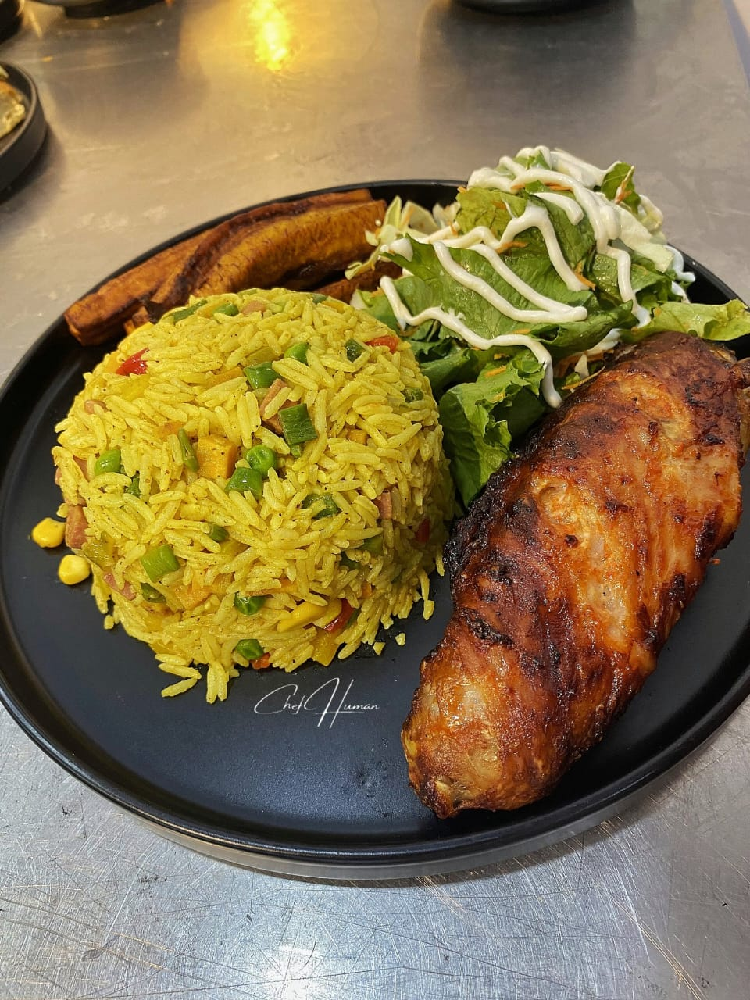

Fried-Rice

photo credit: @wildchefHuman - Twitter
Description
Fried rice is a quick and tasty Asian dish that's super easy to make. It starts with cooked rice, which is then stir-fried in a hot pan with a medley of ingredients like vegetables, eggs, and your
choice of protein, such as chicken, shrimp, or tofu.
The magic happens when you add savory sauces like soy sauce and oyster sauce, infusing the rice with rich flavors. It's a versatile dish that allows you to get creative with your ingredients, making it a go-to option for
using up leftovers or whipping up a satisfying meal in no time.
One of the best things about fried rice is its adaptability. You can customize it to suit your taste preferences, adjusting the spiciness, sweetness, or the type of veggies and meat you use. Whether you enjoy it as a quick weeknight dinner, a side dish, or even for breakfast,
fried rice is a simple yet delightful culinary creation that never dissapoints.
So grab your wok and get ready to savor this delightful combination of flavors and textures that make fried rice a
beloved staple in many cuisines around the world.
Ingredients
- Cooked Rice: Preferably cold rice that has been cooked and cooled to prevent clumping.
- Cooking Oil: Usually vegetable oil or sesame oil for stir-frying.
- Proteins: You can choose from options like diced chicken, shrimp, pork, beef, or tofu.
- Vegetables: Common choices include diced onions, carrots, peas, corn, bell peppers, and green onions.
- Eggs: Often beaten and scrambled before adding to the rice.
- Soy Sauce: Provides saltiness and flavor. You can also use light soy sauce or dark soy sauce for added color.
- Oyster Sauce: Adds a rich, savory umami flavor.
- Garlic: Minced or finely chopped for a fragrant kick.
- Ginger (optional): Grated or minced for an extra layer of flavor.
- Salt and Pepper: To season the dish to taste.
- Optional Seasonings: Depending on your preference, you can add ingredients like chili paste, sesame seeds,
or crushed red pepper flakes for some heat and extra flavor.
- Garnishes: Fresh cilantro, sliced green onions, or toasted sesame seeds can be used
to garnish the dish and add a pop of color and freshness.
Keep in mind that these ingredients can be adjusted and customized to suit your taste,
making fried rice a versatile and adaptable dish.
Steps
- Prepare Ingredients: Gather and chop all your ingredients, including cooked rice,
proteins, vegetables, eggs, and seasonings.
- Heat Oil: Heat cooking oil in a wok or large skillet over medium-high heat.
- Sauté Aromatics: Add minced garlic and ginger (if using) to the hot oil, and sauté briefly for fragrance.
- Cook Proteins: Add your chosen protein (chicken, shrimp, etc.) and cook until it's no longer pink or translucent.
- Add Vegetables: Toss in diced vegetables and stir-fry until they start to soften.
- Scramble Eggs: Push the ingredients to one side of the pan, add beaten eggs to the empty side, and scramble until cooked.
- Combine Ingredients: Mix everything together in the pan.
- Add Rice: Add the cold, cooked rice to the pan and stir-fry, breaking up any clumps.
- Season with Sauces: Drizzle with soy sauce and oyster sauce, and stir to evenly coat the rice and ingredients.
- Season to Taste: Add salt and pepper to taste. Adjust the seasoning as needed.
- Garnish and Serve: Top with garnishes like green onions, cilantro, or sesame seeds, and serve hot.
Enjoy your homemade fried rice!